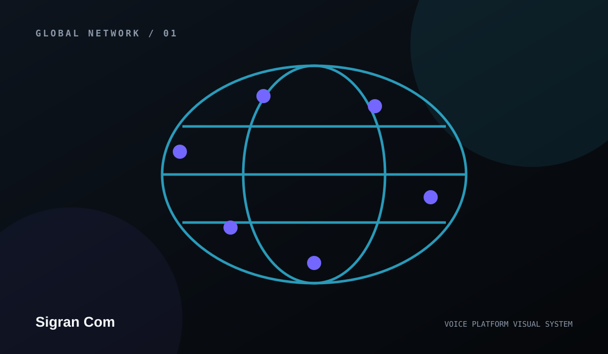
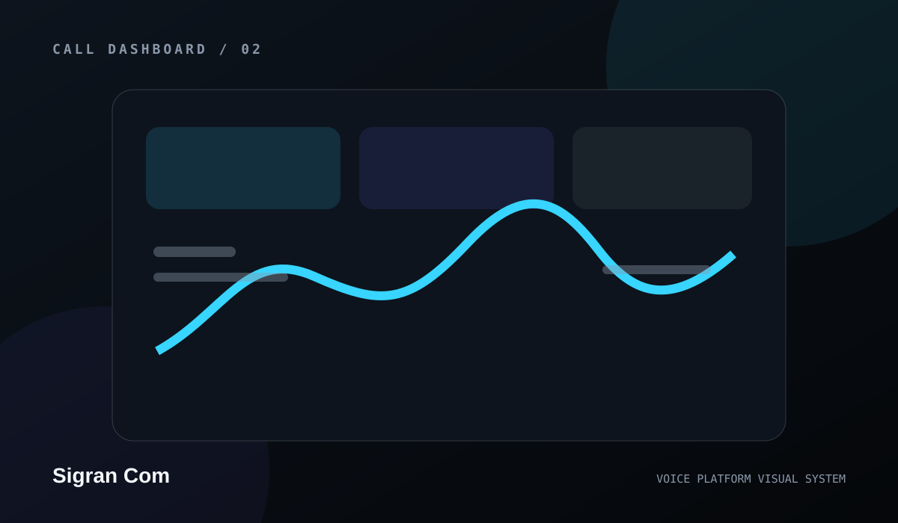
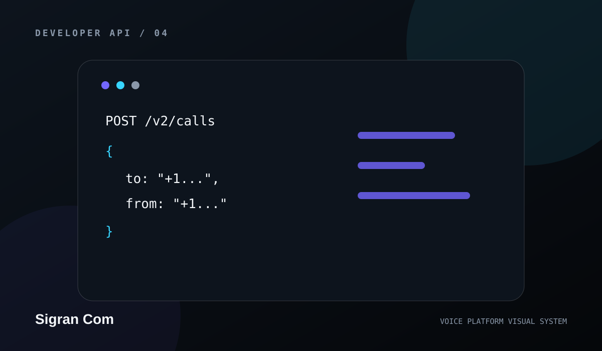
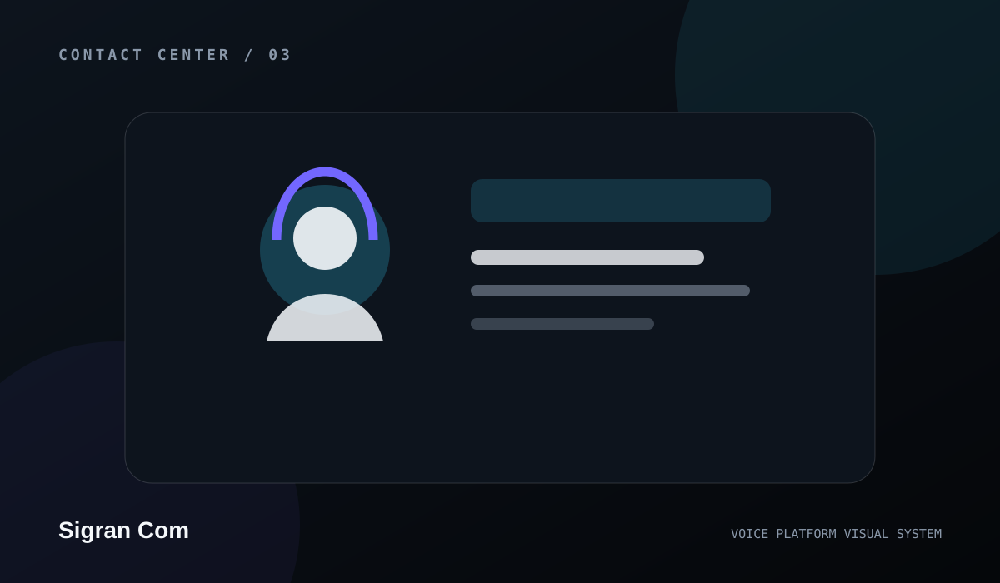
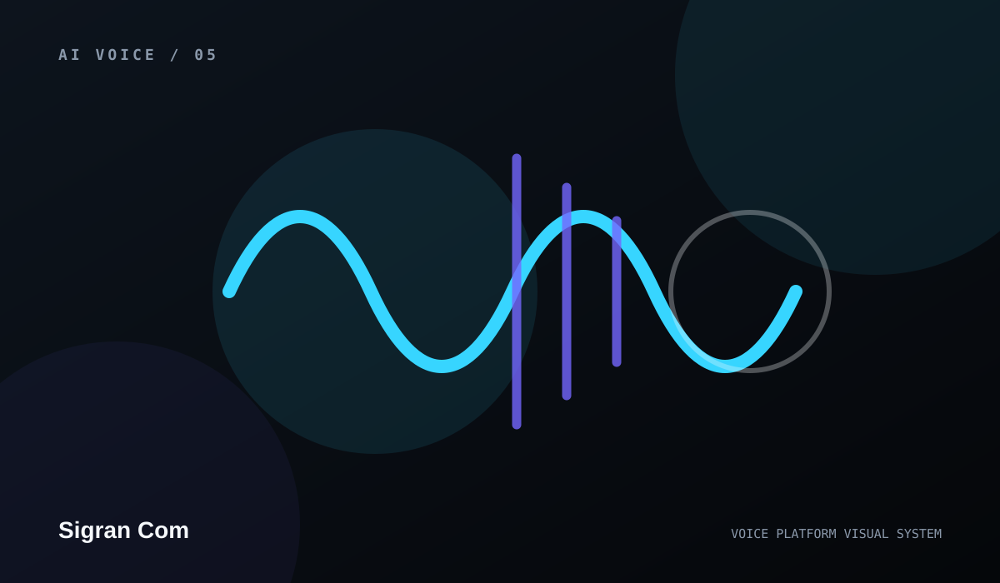

PROGRAMMABLE COMMUNICATIONS · 2026
Every Call. Connected by Design.
Programmable voice, SIP connectivity, business calling, phone numbers, messaging, call routing, automation, and communications infrastructure.

THE PLATFORM
Build call experiences as a system, not a pile of disconnected tools.
The V12 site architecture is designed around communications infrastructure: programmable voice, SIP connectivity, numbers, call routing, IVR, messaging, developer workflows, security, support, and operational visibility.
Explore platform architecture ↗PRODUCT LAYERS
Everything a serious voice experience needs to explain.
Each product area gets a dedicated page, branded visual, developer path, support route, privacy-safe contact layer, and clear boundaries between conceptual content and verified production data.
Programmable Voice
Build application-controlled calling experiences with programmable call control, events, webhooks, media actions, and clear operational boundaries.
SIP Trunking
Connect PBX, contact-center, and communications systems through a SIP-oriented architecture designed for clear routing and operations.
Phone Numbers
Organize number provisioning, assignment, lifecycle, routing, and application ownership without publishing unverified inventory or coverage claims.
Messaging
Prepare a communications experience that can grow to include messaging workflows alongside voice when real messaging services are configured.
Contact Center
Structure inbound and outbound calling, queueing, agent workflows, escalation, support, and operational context as one experience.
AI Voice & Automation
Design AI-assisted voice workflows with clear handoff, routing, observability, recordings, and human control.
Call Routing
Map inbound and outbound call paths, policies, failover, queues, destinations, and application logic in a way teams can understand.
IVR & Call Flows
Build menu, prompt, routing, verification, escalation, and self-service call flows without hiding the path to a human when one is required.

OPERATIONS
Make calls observable.
A professional voice platform needs more than a dial button. The site includes call-flow concepts, analytics, status, support, security, documentation, webhooks, integration architecture, and a developer center.
- Call lifecycle and routing architecture
- SIP, API, number, and webhook concepts
- Support Center, Help Center, Service Status, Trust Center
- No fabricated call volume, coverage, uptime, pricing, or compliance claims
DEVELOPER EXPERIENCE
From first request to production architecture.

POST /calls
{
"to": "+1…",
"from": "+1…",
"webhook": "/voice/events"
}Example structure only. Real provider credentials and endpoints belong in server-side configuration, never public website JavaScript.
CONTACT CENTER
Support deserves its own architecture.
V12 creates a complete support layer and can publish a real support phone number without publishing the connected GitHub account email.

Support Center
Help Center, Getting Started, troubleshooting, service status, support request, trust, security, FAQ, and phone contact are connected across the site.
DEPTH BY DEFAULT
A full communications website.

NEXT LAYER
Build a communications brand that looks ready for real operations.
BrandForge V12 creates the structure first, then leaves rates, coverage, credentials, provider verification, and regulated claims for real verified data.